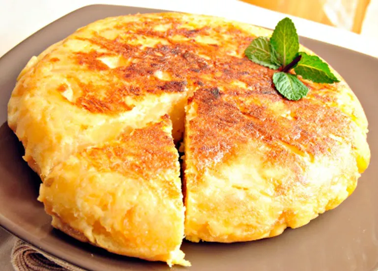

Tortilla de papa
Ingredientes
- Papas
- huevos
- condimentos
- aceite
Preparación
- pelar las papas.
- Cortar las papas en cubos.
- fritarlas con el aceite.
- agregar el huevo y los condimentos junto a las papas en un bowl.
- colocar la mezcla en una sartén.
- ¡disfrutar!

